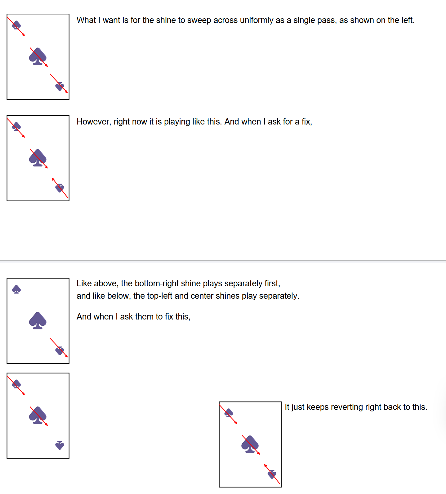
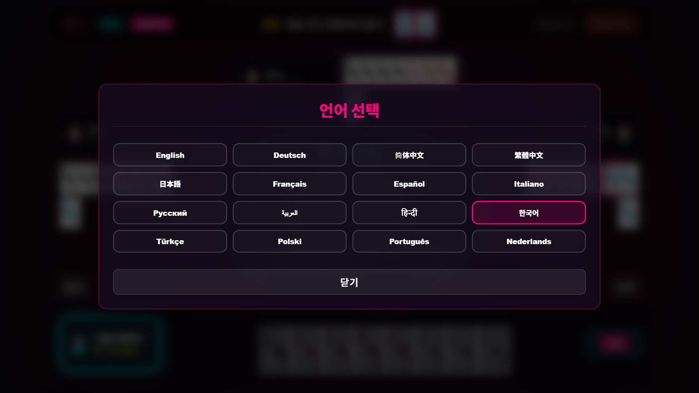
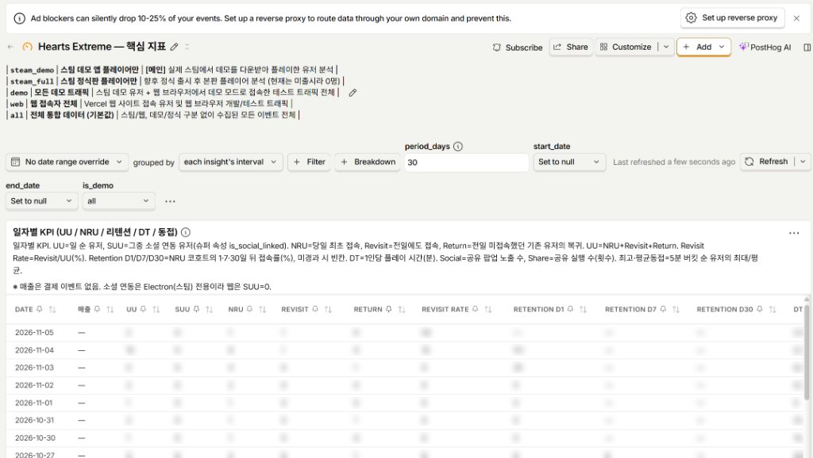

Welcome to the third development log for Hearts Extreme! July was a pivotal month where the game transitioned from experimental prototype to a robust, feature-complete production. Here is a look behind the curtain at the technical challenges, level balancing decisions, and publishing milestones we tackled.
After transitioning to Claude, one particular problem remains vividly etched in my memory.
In trick-taking games, the concept of a trump card is foundational. Across the 10 distinct decks provided in Hearts Extreme, some decks feature trumps while others do not, and the designated trump suit frequently changes. Because of this variety, I felt it was essential to give trump cards a special, unmistakable visual indicator. I decided on an elegant directional glow effect radiating from the top-left toward the bottom-right across the card.
After several iterations in Antigravity, I finally got the effect to display. But as I sat playtesting, a subtle flaw began to nag at me.
On standard playing cards, the suit symbols in the top-left corner and the card center are positioned upright, while the symbol in the bottom-right index is flipped upside down. Because I had instructed the tool to apply the glow uniformly to the suit symbols, the glow on the top-left and center symbols cast beautifully from top-left to bottom-right—but on the inverted bottom-right symbol, the glow emanated backwards, from bottom-right to top-left!
Logically, this behavior was understandable from an orientation standpoint, and I could have easily brushed it off. Yet every time I looked at a hand, it bothered me. From the viewer's absolute perspective, I wanted all three symbols on the card to radiate light in the exact same visual direction.
I tried fixing it in Antigravity, but the tool struggled to decouple the inverted index transform from the CSS glow coordinate system. I exhausted my daily token quota that day, and the next day's attempts hit a similar wall. I almost resigned myself to abandoning the fix. However, when I brought the task to Claude, it grasped the coordinate nuance and resolved it cleanly within a single working session. Moments like this made me realize that investing in premium AI tools pays for itself many times over by eliminating hours of exhausting trial and error.
[Antigravity와의 사투의 흔적]
(Traces of the Struggle with Antigravity)

The debugging notes from the attempt to synchronize suit glow angles across inverted indexes.
Going Global: 16-Language Localization
As July began, I judged that the core gameplay mechanics were sufficiently mature, so I turned my focus toward multilingual localization.
I am well aware that open-hand trick-taking puzzles occupy a niche market. Precisely for that reason, I felt a deep responsibility to deliver the best possible experience to enthusiasts worldwide, regardless of where they live. I set out to support as many languages as feasible.
Consequently, July involved not only fixing edge-case bugs across various game modes, but also spending dozens of hours inspecting, testing, and formatting localized text across 16 languages. Ensuring that German compound words didn't overflow buttons, Japanese and Chinese characters rendered with crisp typography, and right-to-left layout nuances were respected required meticulous care, but it was worth every minute.

The in-game language selection overlay supporting 16 languages across the globe.
Mid-July Level Restructuring & Progressive Learning Curve
Through extensive testing in mid-July, I made another major design decision: moving the "Win tricks with designated mission cards" challenge from Level 2 up to Level 4, while shifting the former Level 3 and Level 4 missions down to Levels 2 and 3.
The root issue was that when players encountered this mission across a 6-stage gauntlet, the difficulty spike was punishingly steep so early in the progression. Rather than trying to artificially flatten the challenge across all 6 stages, reducing the stage count and reordering the educational flow proved to be a far superior design choice.
The resulting progression guides the player's mental model step by step:
- Level 1 (Trick Control): Building awareness of hitting exact target trick counts.
- Level 2 (Evasion): Learning the art of avoiding tricks and ducking penalty cards.
- Level 3 (Capture): Learning aggressive strategies to intentionally seize specific cards.
- Level 4 (Designated Sniping): Mastering surgical trick wins with predetermined cards.
- Level 5 (Prediction Mastery): Formulating player-driven predictions to prepare for competitive play.
- Ranked Mode: True mastery, competing on global daily leaderboards against other players.
In addition to this level restructuring, I spent countless hours fine-tuning deck unlock criteria and stage completion thresholds to find that elusive sweet spot between challenge and flow.
Ranked Backend & Custom Analytics Dashboards
With release on the horizon, July also saw heavy engineering on backend server connectivity for Daily Ranked Mode and telemetry analytics integration.
While I understood data analytics conceptually, architecting and wiring up complete logging pipelines from scratch was unfamiliar territory. Initially, I leaned heavily on AI to build the telemetry views, but the generated dashboard felt unintuitive and awkward to parse.
Ultimately, I tore down the generated views and rebuilt the analytics screens from the ground up to match the data visualizations I was personally comfortable with. Once the data was presented in a familiar, actionable format, a wave of relief washed over me. While a game's commercial success depends fundamentally on its core fun, having robust telemetry creates an invaluable foundation—it gives a solo developer the clarity to observe player trends, diagnose balance issues, and continuously refine the experience.

The rebuilt custom telemetry dashboard monitoring daily active users, retention, and play session data.
Steam Registration & Community Playtests
Finally, Hearts Extreme officially achieved registration on Steam!
This milestone came with its own memorable episode: non-US developers registering an account must submit identity verification with photos. My initial submission took far longer than expected, only for me to discover that I was supposed to take a selfie holding my physical government ID card! After resubmitting with the proper selfie, approval came through within three days.
As the final pieces came together, I wanted to ensure the game was thoroughly vetted before commercial release. I reached out to my colleagues in the Korean tabletop board game designer community for an intensive round of playtesting. Their experienced design instincts and critical feedback were indispensable, and I want to express my deepest gratitude to all of them.
Lastly, as a solo creator releasing my very first commercial video game, I wanted to give as many players as possible the opportunity to experience the gameplay firsthand. I made the decision to build and distribute a free, fully playable in-browser web demo. I sincerely hope the demo helps players discover the unique thrill of open-hand trick-taking puzzles!
This concludes our reflections on the intensive development journey of July 2026. Stay tuned for our next devlog covering the dramatic overhauls of August!